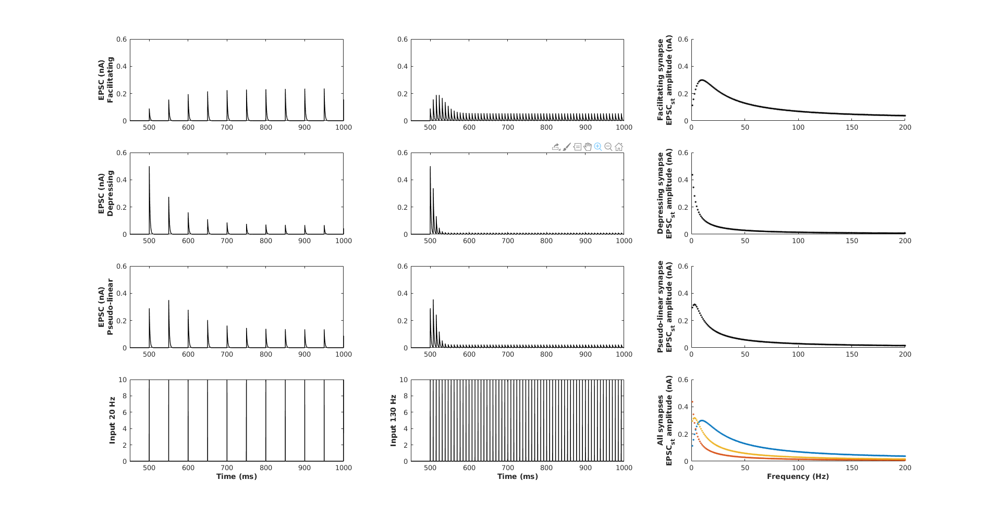
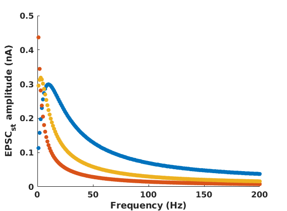
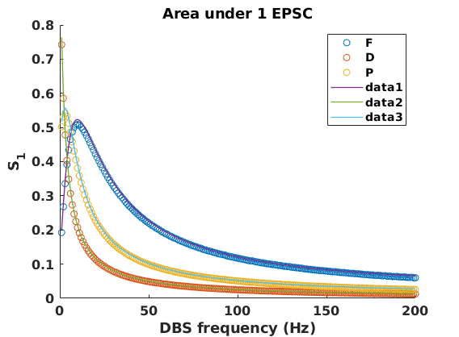
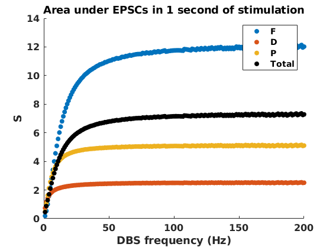
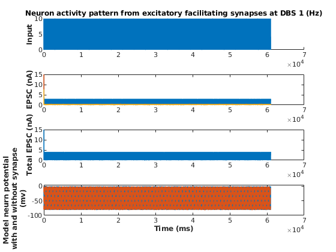
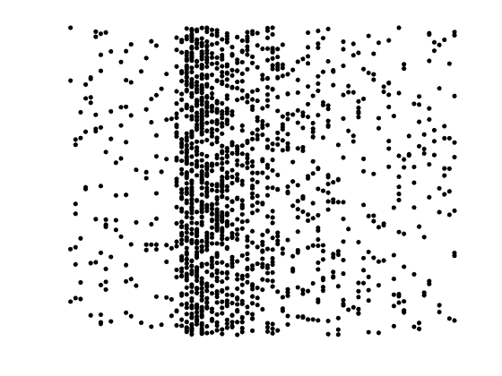
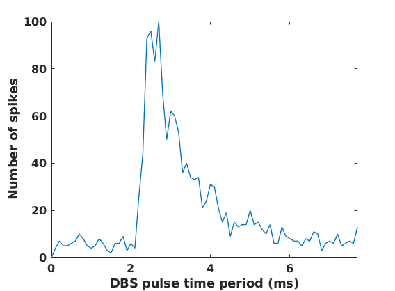
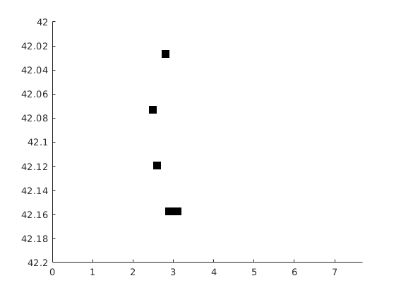

This is the readme for the model associated with the paper:
Farokhniaee A, McIntyre CC (2019) Theoretical principles of deep brain stimulation induced synaptic suppression. Brain Stimul 12:1402-1409
http://dx.doi.org/10.1016/j.brs.2019.07.005
This MATLAB code was contributed by A Farokhniaee.
Usage:
------
To generate plots like figures 2 and 3 in the paper type the name of
the program at the matlab command prompt:
all_synaptic_gains_E123_paper_figure In less that a minute the
following plots are generated:




For images similar to figures 4 and 5 in the paper run the program:
LIF_neuron_activity_with_synpases



